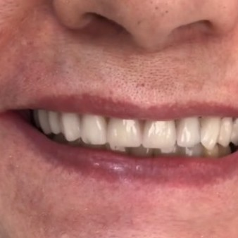
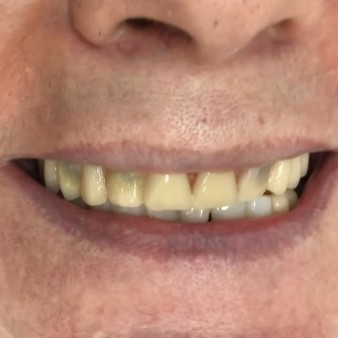
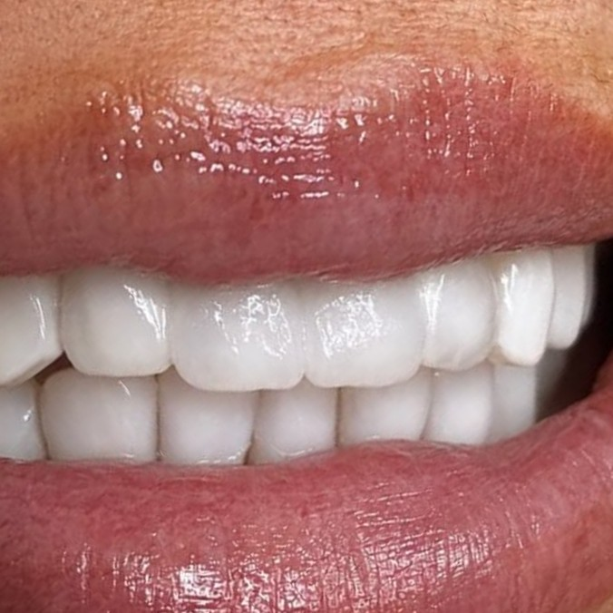
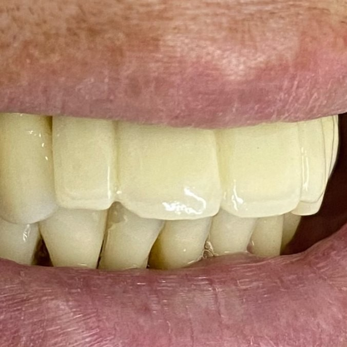
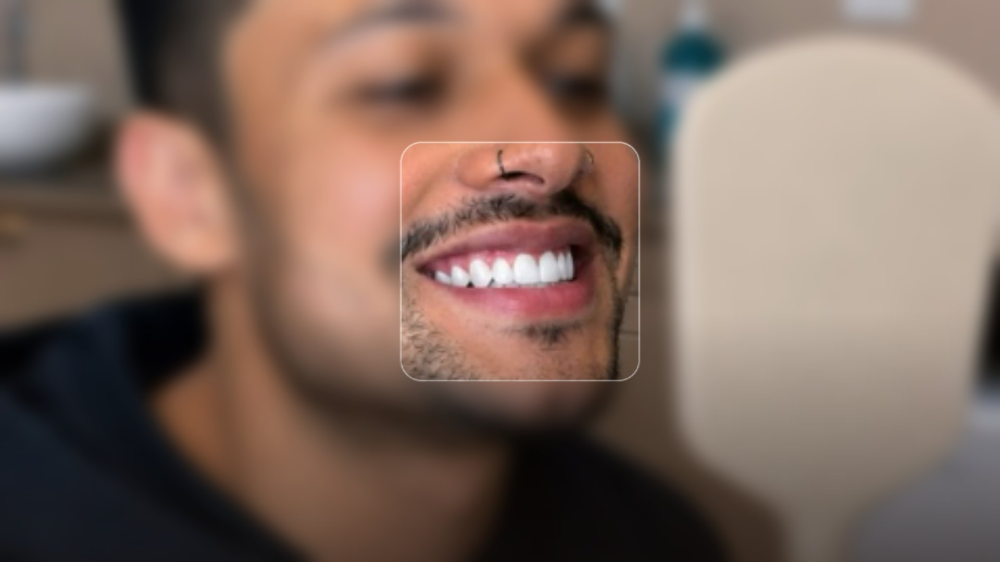

Sorriso
Reabilitação do sorriso com planejamento individual
Recuperação da forma, da cor e da função dos dentes, com um plano explicado antes de começar.
Agendar minha avaliação

Antes Depois

Antes DepoisSobre o tratamento
Para dentes desgastados, quebrados ou com coroas antigas que perderam forma e cor.
Recuperação da forma, da cor e da função dos dentes, com planejamento individual.
Pode combinar lentes, coroas e outros tratamentos, conforme a sua avaliação.
- Exame completo dos dentes, da gengiva e da mordida
- Plano com as etapas explicadas antes de começar
- Acompanhamento depois do tratamento
Como é o tratamento
As etapas e os prazos variam de pessoa para pessoa. Você conhece o seu plano antes de começar.
- 1
Exame completo
Avaliamos dentes, gengiva e mordida e ouvimos o que você quer recuperar.
- 2
Plano de tratamento
Montamos o plano com as etapas, e você decide no seu tempo.
- 3
Tratamento por etapas
Seguimos o plano combinado, com os tratamentos indicados para o seu caso.
- 4
Acompanhamento
Orientamos os cuidados e acompanhamos o resultado.
Dúvidas frequentes
O que é a reabilitação do sorriso?
É o conjunto de tratamentos que recupera a forma, a cor e a função dos dentes. Cada plano é diferente e definido na avaliação.
Quanto tempo leva?
Depende do que o seu caso pede. Na avaliação explicamos as etapas e os prazos.
O tratamento dói?
Depende do procedimento. Antes de começar, explicamos o que você vai sentir e usamos anestesia quando ela é indicada.
Quanto custa?
O valor depende do seu caso e do tratamento indicado. Apresentamos o orçamento depois da avaliação, para você decidir com todas as informações.
Outros tratamentos da Cintra

Agende sua avaliação
na Cintra
Fale com a equipe pelo WhatsApp e combine o melhor dia e horário com a Dra. Isabelle ou com a Dra. Karen.
Os resultados variam de acordo com cada paciente.